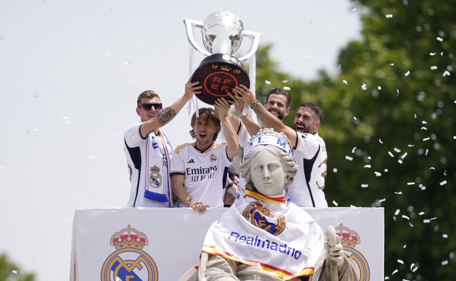

A lo largo de su historia el Madrid a ganado absolutamente todas las competiciones, algunas las a ganado mas que otras pero sin importar eso, sus numeros son exorbitantes e incomparables. Para darte una idea de la grandeza del club podemos tomar en cuenta las ligas de España, en esta competicion se han coronado 36 veces ya, afortunadamente la ultima que han levantado ha sido el dia de ayer. Despues de ganarla ya 36 veces se ha hecho costumbre celebrarla en la fuente de la diosa cibeles en el centro de la capital española.
Si hay una competición en la que destaca especialmente el Real Madrid es en la Champions League, para conocer un poco de ella te podemos decir que es un torneo de 32 equipos en los que se enfrentan, los mejores equipos del mundo y para decirte un poco mas, el Madrid es el maximo ganador por mucha diferencia ya que en sus vitrinas cuenta con 14 de ellas y el segundo mayor ganador de este trofeo se encuentra a 7 copas de diferencia. Para hacer una comparación, cualquier equipo de europa tendria que ser el mejor por minimamente 9 años para acercarse a el y segun las proyecciones va a tener que pasar mucho tiempo para que eso suceda.